Aplikasi Peringatan Gempa Bumi
Memberdayakan komunitas melalui kesiapsiagaan dan respons terhadap gempa bumi
Aplikasi Siaga Gempa dirancang sebagai platform mobile untuk memberikan informasi dan peringatan gempa bumi secara real-time kepada pengguna. Selain itu, aplikasi ini juga menyediakan fitur SOS yang memungkinkan pengguna mengirimkan sinyal darurat saat terjadi bencana, sehingga dapat mempercepat respons bantuan dan meningkatkan keselamatan.
Banyak masyarakat tidak mendapatkan informasi gempa secara cepat dan akurat, sehingga respon terhadap situasi darurat menjadi terlambat. Selain itu, kurangnya sistem yang terintegrasi untuk meminta bantuan saat kondisi darurat membuat penanganan korban menjadi kurang efisien.
Proyek ini bertujuan untuk menyediakan sistem peringatan gempa yang cepat, akurat, dan mudah diakses, serta mempermudah pengguna dalam mengirimkan sinyal darurat (SOS) agar bantuan dapat segera diberikan dalam situasi kritis.
Untuk memahami bagaimana pengguna menerima dan merespons peringatan gempa bumi serta penggunaan fitur darurat, dilakukan penelitian pengguna untuk mengeksplorasi pengalaman nyata mereka dalam situasi bencana. Tujuannya adalah mengidentifikasi kebutuhan, perilaku, dan ekspektasi pengguna terhadap aplikasi peringatan gempa dan sistem darurat digital.
Dilakukan wawancara kualitatif dengan 5 partisipan yang pernah mengalami atau merasakan gempa bumi, serta pernah menerima informasi darurat melalui berbagai kanal seperti notifikasi, media sosial, atau sistem peringatan lainnya. Fokus wawancara adalah pada pengalaman saat menerima peringatan, respons dalam situasi darurat, serta harapan terhadap sistem peringatan digital.
Dari hasil wawancara, ditemukan beberapa pola terkait bagaimana pengguna menerima informasi gempa dan tantangan yang mereka hadapi:
Pengguna yang responsif terhadap situasi darurat dan segera mengambil tindakan ketika menerima peringatan gempa bumi atau berada dalam kondisi berisiko.
Pengguna yang cenderung kurang responsif terhadap peringatan gempa dan jarang menggunakan fitur darurat karena rendahnya kesadaran atau kepercayaan terhadap sistem.
Masalah utama bukan pada kemauan pengguna untuk melaporkan kejadian, tetapi pada kurangnya transparansi dan umpan balik setelah laporan dikirim. Pengguna kehilangan kepercayaan pada sistem karena tidak dapat melacak perkembangan laporan mereka.
Dari penelitian pada tahap Empathize, ditemukan bahwa pengguna sangat membutuhkan sistem peringatan gempa yang cepat dan dapat diandalkan, terutama dalam memberikan notifikasi real-time serta akses cepat ke fitur darurat saat terjadi bencana. Namun, pengalaman pengguna sering terhambat oleh keterlambatan informasi, kurangnya kejelasan instruksi, dan minimnya respons dalam situasi darurat.
Beberapa pola perilaku ditemukan: pengguna ingin segera mendapatkan peringatan saat gempa terjadi, tetapi kepercayaan mereka menurun ketika informasi terlambat atau tidak jelas. Banyak pengguna merasa tidak yakin apakah kondisi mereka sudah aman atau belum, sehingga dibutuhkan sistem yang memberikan informasi real-time dan panduan yang jelas saat bencana.
Berdasarkan insight yang diperoleh, saya menyusun sebuah persona utama yang merepresentasikan pengguna umum dari aplikasi peringatan gempa bumi.
Junior adalah seorang pekerja kantoran berusia 28 tahun yang tinggal di daerah perkotaan Bandung. Dalam aktivitas sehari-harinya, ia cukup sering merasakan atau menerima informasi terkait gempa bumi, baik melalui notifikasi maupun media sosial.
Ketika terjadi gempa atau menerima peringatan, Junior biasanya segera mencari informasi tambahan untuk memastikan kondisinya aman. Namun, pengalaman sebelumnya membuatnya sering merasa cemas karena informasi yang diterima tidak selalu jelas atau datang terlambat.
Seiring waktu, ketidakpastian ini membuat Junior merasa kurang percaya pada informasi darurat yang tidak real-time. Ia cenderung bergantung pada berbagai sumber sekaligus, seperti aplikasi, media sosial, dan orang di sekitarnya, untuk memastikan apakah situasi benar-benar aman.
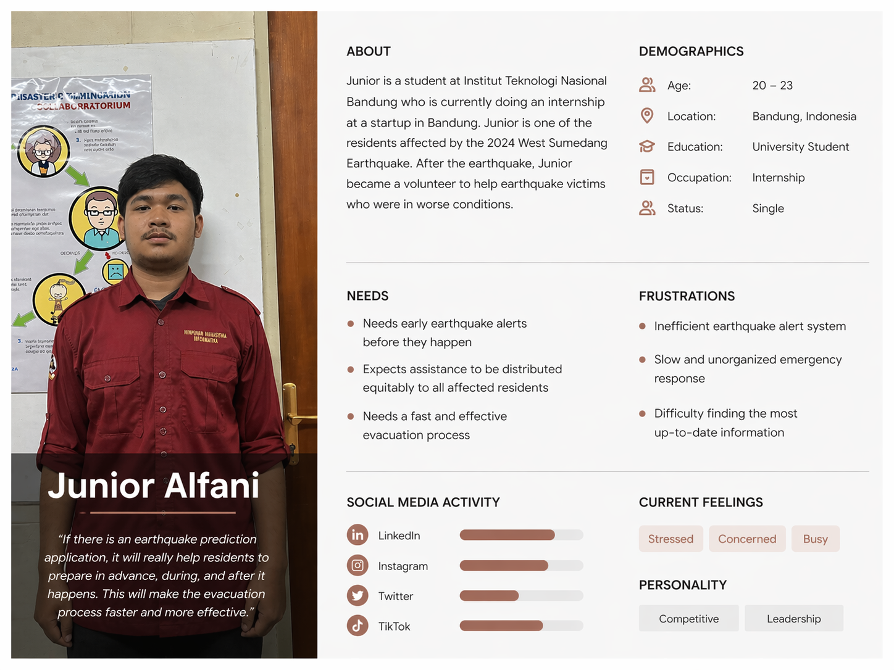
Pengguna membutuhkan sistem peringatan gempa yang terpusat dan andal yang dapat memberikan notifikasi real-time, menyediakan instruksi yang jelas saat terjadi gempa, serta memastikan pengguna merasa aman melalui informasi yang transparan dan cepat.
Bagaimana jika kita merancang sistem peringatan gempa yang mampu memberikan notifikasi real-time secara akurat, membantu pengguna memahami kondisi darurat dengan cepat, serta menyediakan fitur SOS yang mudah diakses untuk meningkatkan respons dan keselamatan?
Solusi berfokus pada pengembangan aplikasi darurat gempa bumi yang meningkatkan keselamatan pengguna melalui notifikasi gempa secara real-time, fitur SOS darurat yang cepat diakses, serta informasi darurat yang mudah dipahami. Selain itu, aplikasi juga menyediakan fitur pendukung seperti riwayat gempa, edukasi kesiapsiagaan, dan informasi tambahan untuk membantu pengguna lebih siap menghadapi situasi bencana.
Tahap ideasi menghasilkan beberapa fitur inti yang dirancang untuk membantu pengguna saat terjadi gempa bumi serta meningkatkan kecepatan respons dan efektivitas penanganan keadaan darurat.
Sistem sinyal darurat cepat yang dirancang untuk situasi gempa bumi kritis.
Sistem notifikasi real-time yang memberikan informasi gempa bumi secara cepat kepada pengguna.
Fitur pendukung untuk meningkatkan kesadaran, kesiapsiagaan, dan transparansi dalam penanganan bencana.
Prototipe dari tingkat low hingga high fidelity dibuat untuk menguji kegunaan, alur navigasi, serta kejelasan pengalaman pengguna dalam sistem peringatan gempa bumi sebelum tahap pengembangan.
Saat mengembangkan wireframe, saya mempelajari beberapa pola aplikasi peringatan bencana dan sistem respons darurat untuk memahami bagaimana pengguna berinteraksi dalam situasi kritis. Fokus utama saya adalah bagaimana informasi ditampilkan secara jelas serta bagaimana aksi cepat seperti SOS, peringatan, dan akses darurat diprioritaskan. Selain itu, saya juga mengeksplorasi aplikasi terkait edukasi kebencanaan dan kesiapsiagaan darurat. Saya menemukan bahwa banyak aplikasi hanya menyediakan peringatan real-time atau konten edukasi secara terpisah, tanpa keterkaitan yang jelas antara situasi darurat dan tindakan yang harus dilakukan penggunaN Dari temuan tersebut, saya menggabungkan beberapa elemen penting seperti peringatan gempa secara real-time, aksi darurat SOS, sistem donasi untuk daerah terdampak, serta panduan mitigasi yang terstruktur. Tujuannya adalah menciptakan sistem yang tidak hanya memberikan informasi saat bencana terjadi, tetapi juga membantu pengguna mengambil tindakan cepat serta tetap siap sebelum, saat, dan setelah gempa bumi.
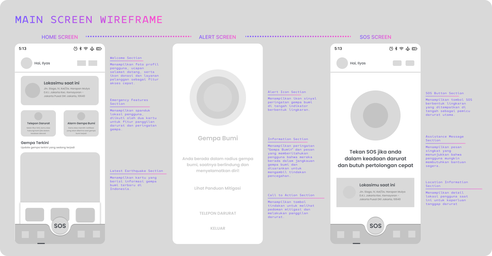
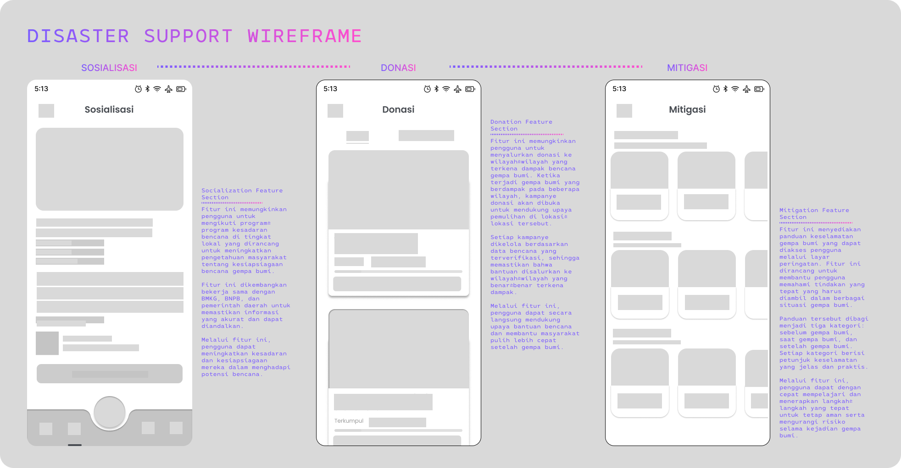
Pada tahap high-fidelity prototype, saya menerjemahkan wireframe menjadi desain yang lebih detail dan realistis dengan memperhatikan visual hierarchy, konsistensi komponen, serta pengalaman pengguna secara keseluruhan. Fokus utama pada tahap ini adalah memastikan setiap fitur seperti SOS darurat, notifikasi gempa, edukasi, dan donasi dapat diakses dengan cepat dan intuitif dalam kondisi penggunaan nyata. Saya juga melakukan penyesuaian desain berdasarkan flow pengguna agar interaksi terasa lebih natural, terutama dalam situasi darurat yang membutuhkan respon cepat dan jelas.
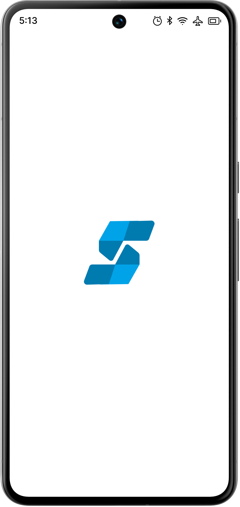
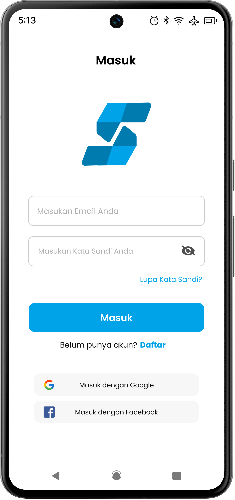

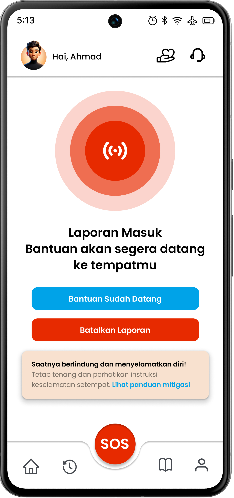
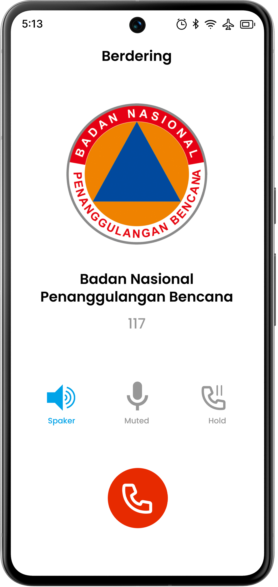
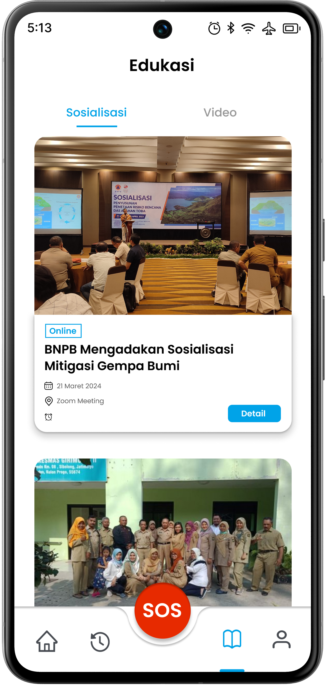
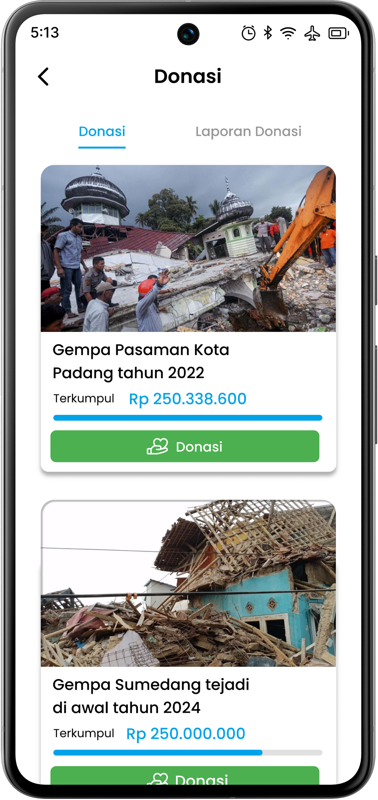
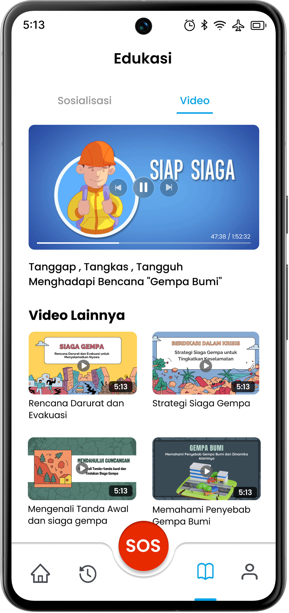
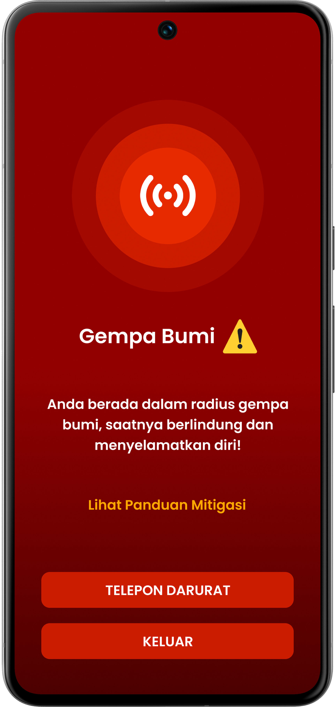
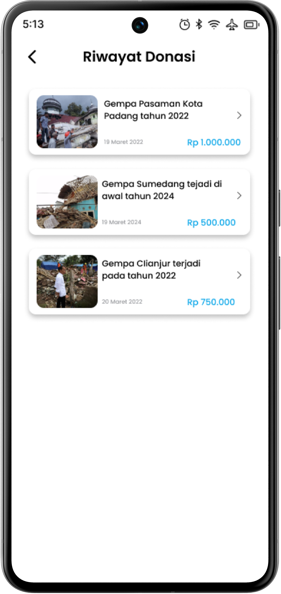
Pengujian usability dilakukan untuk mengevaluasi bagaimana pengguna berinteraksi dengan prototipe, dengan fokus pada keberhasilan penyelesaian tugas, kejelasan navigasi, serta pengalaman pengguna secara keseluruhan dalam menggunakan sistem pelaporan darurat.
Prototipe berhasil meningkatkan efisiensi dan kejelasan alur penggunaan aplikasi, terutama dalam proses penyampaian dan respons darurat. Namun, keterlihatan fitur pelacakan status masih perlu ditingkatkan agar pengguna dapat dengan mudah memantau kondisi dan perkembangan situasi secara real-time.
Berdasarkan masukan yang diperoleh, desain kemudian disempurnakan dengan meningkatkan keterlihatan fitur pelacakan laporan darurat serta memperjelas elemen navigasi agar pengguna dapat memahami alur penggunaan aplikasi dengan lebih intuitif.